Kort fortalt
Meta har et godt utgangspunkt. Det ble lansert 11 nye annonser i oktober, med ulike bilder, en karusell og to UGC-videoer. Konseptene som beskriver en konkret situasjon får mest visning.
Google står mer eller mindre stille. Etter juli har bare fire annonser vært i bruk, og i dag går to søkeannonser. Hovedannonsen har hatt samme tekst siden april 2025, med påstanden «Norges Beste».
Nødradioen annonseres ikke noe sted. Konkurrentene har minst 25 aktive nødradio-annonser på Meta. Krisesikker har ingen.
Shopping viser mest solcellepanelet. Produktet som har fått flest visninger i Shopping er et solcellepanel med 14 % rabatt, ikke beredskapspakken til 4 999,-.
All Meta-tekst er lik. De 8 bildeannonsene har samme primærtekst, så bildene testes, men budskapet testes ikke.
Meta har stoppet en tidligere annonse. Den gikk fra desember til mai og ble merket «kjørte uten obligatorisk erklæring». Beredskap kan bli lest som et samfunnstema, og det må håndteres.
23 annonser, men nesten all trafikk kommer fra tre av dem
Kontoen har kjørt siden april 2025. I slutten av mai 2026 ble det testet mye på to uker: dynamiske søkeannonser, Display, nødradio og en bok. Nesten alt det ble skrudd av igjen. I dag går to søkeannonser og Shopping.
| Annonse | Type | Periode | Visninger* |
|---|---|---|---|
| «Norges Beste Beredskapsboks · Komplett Krisepakke» | Søk | apr. 2025 → i dag | 175–200k |
| Bærbart solcellepanel 20W, −14 % | Shopping | okt. 2025 → 28. okt. 2026 | 125–150k |
| «Komplett beredskapspakke nå» | Søk | okt. 2025 → i dag | 25–30k |
| «7 ting du må ha i ditt beredskapslager» | Søk | okt. 2025 → juli 2026 | 25–30k |
| Shopping-runde (pakke m.m.) | Shopping | 25. mai → 5. juni 2026 | 20–25k |
| «Den lille beredskapsboken» | Shopping | 25. mai → 5. juni 2026 | 2 × 8–9k |
| «Komplett Beredskapspakke · beredskapslager fra Krisesikker.no» | Søk | okt. 2025 → juli 2026 | 4–5k |
| Display / Demand Gen («Samme familie. Bare tryggere.») | Display | mai → sep. 2026 | 1–4k |
| «Bærbar nødradio med sveiv og solceller DAB» | Søk | mai 2026 | 0–1k |
| «Psykisk helse i kriser · hvordan håndtere stress» | Dynamisk søk | 26. mai → 2. juni 2026 | 0–1k |
| Resten, rundt 10 søke- og dynamiske annonser | Søk | apr. → juni 2026 | 0–2k hver |
* Googles anslag i Norge, fra første visning til 4. august 2026. Visninger sier ikke noe om salg, men de viser hvor budsjettet har gått.
Hovedannonsen har hatt samme tekst i 18 måneder
Søkeannonsen «Norges Beste Beredskapsboks» står for de fleste visningene i kontoen. Det gir to problemer:
- «Norges beste» kan ikke dokumenteres. Google kan avvise eller begrense superlativer som ikke kan underbygges, og kundene stoler mindre på dem.
- Det finnes sterkere fakta. 4,8 av 5 fra 187 anmeldelser, mer enn 1 500 norske hjem, DSBs liste for 7 dager, kjente merker som Stormberg og Primus, pakket for hånd i Halden, gratis frakt og 30 dagers åpent kjøp. Alt dette kan stå i annonsen og testes mot hverandre.
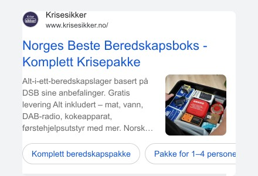
Vist fra apr. 2025 til i dag · 175–200k visninger
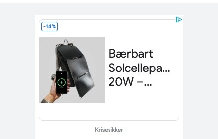
Shopping · 125–150k visninger
Shopping bruker mest visning på solcellepanelet
Produktet som har fått flest visninger i Shopping er solcellepanelet, ikke beredskapspakken. Hvis panelet selger med god margin, er det greit. Hvis ikke, går en stor del av Shopping-budsjettet til et produkt med lav ordreverdi.
Med tilgang til kontoen sjekker vi hvordan produktene er gruppert, hvilken ROAS hvert produkt gir, og om pakken (4 999,-) har en egen kampanje med eget budsjett.
Dynamiske annonser plukket opp blogginnhold
I testperioden i mai ble det kjørt dynamiske søkeannonser, der Google lager overskriften fra sider på nettstedet. Én av dem endte opp som «Psykisk helse i kriser · hvordan håndtere stress og usikkerhet». Det tiltrekker folk som leter etter råd, ikke etter noe å kjøpe, og det går imot ønsket om å unngå skremsel.
Hvis dynamiske annonser skal brukes igjen, bør de bare peke mot produkt- og kategorisider, og bloggen bør utelates.
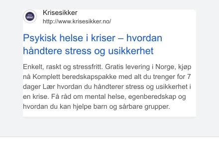
Dynamisk søkeannonse · mai–juni 2026
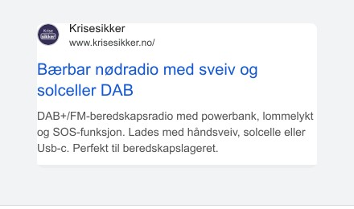
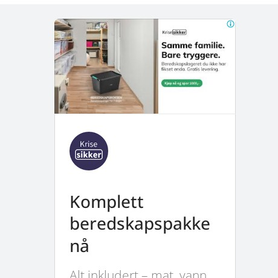
Nødradio og Display fikk aldri en ordentlig sjanse
Nødradio-annonsen og Display-annonsene gikk i noen dager og fikk under 4 000 visninger. Det er for lite til å si om de virker. Folk søker aktivt etter nødradio og DAB-radio, så den bør få en egen søkekampanje med eget budsjett.
Ny satsing fra oktober med gode konsepter, men én tekst
Fra desember 2025 til mai 2026 gikk det i praksis bare én annonse, og den brukte rundt 8–9 000 kr. 14. oktober kom 9 nye annonser, og 29. oktober kom to UGC-videoer. Alle 11 kjører nå på Facebook, Instagram, Messenger og Threads.
Bildetesten: konkrete situasjoner slår tillitsbudskap
De 8 bildeannonsene har lik tekst og ulike bilder. Meta har gitt nesten all visning til fire av dem. De fire vinnerne viser en situasjon man kan se for seg. De fire som ikke får visning handler om tillit og sosialt bevis, som «1500+ hjem», en anmeldelse og «3 grunner».
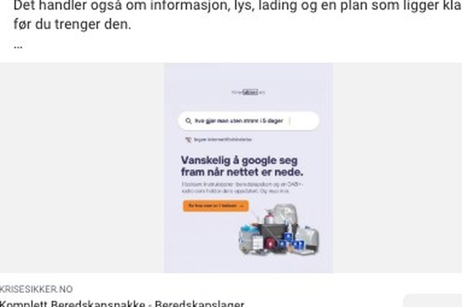
«Vanskelig å google seg fram når nettet er nede»
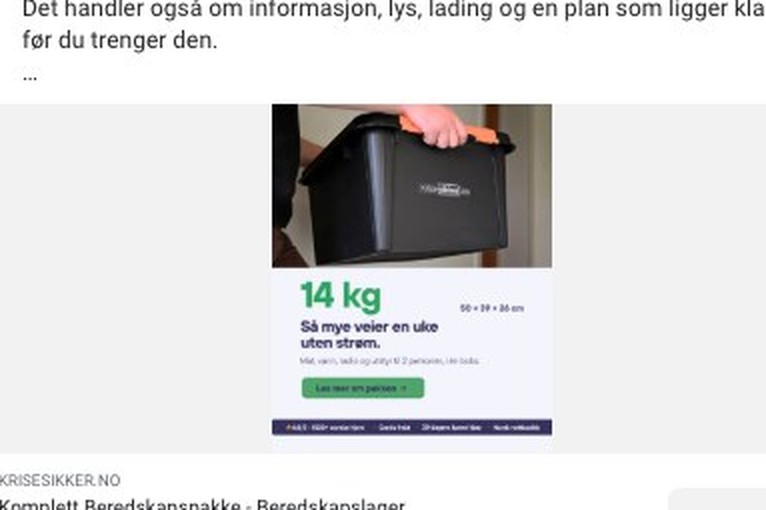
«14 kg. Så mye veier en uke uten strøm»
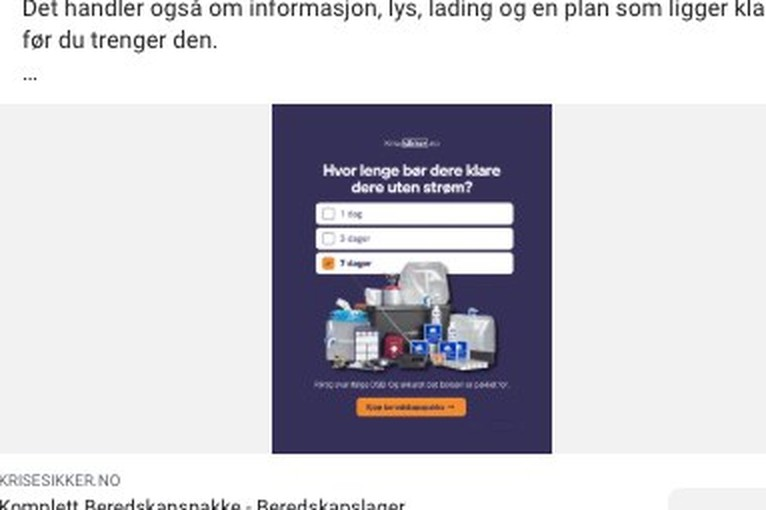
«Hvor lenge bør dere klare dere uten strøm?»
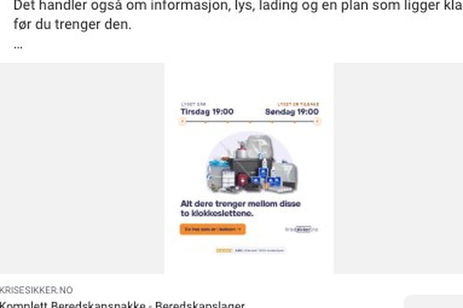
«Alt dere trenger mellom disse to klokkeslettene»
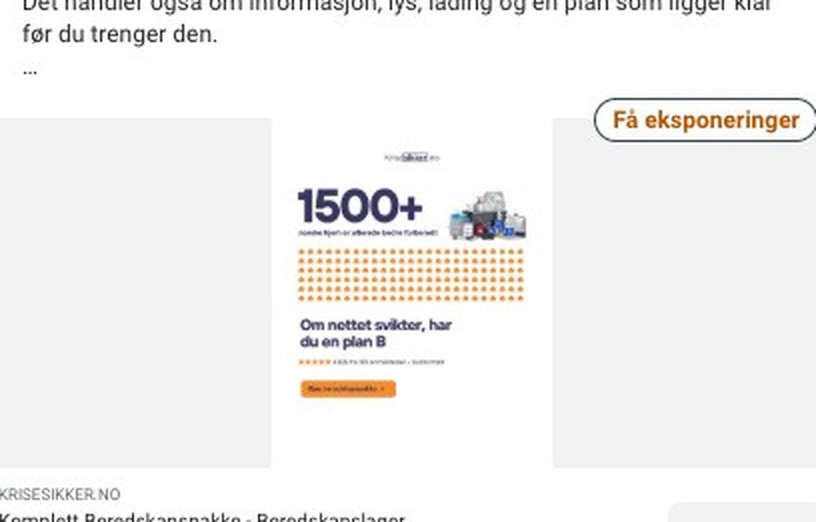
«1500+ … Om nettet svikter, har du en plan B»
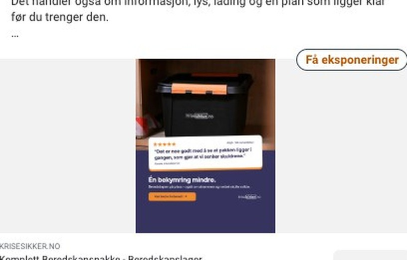
«Én bekymring mindre» (anmeldelse)
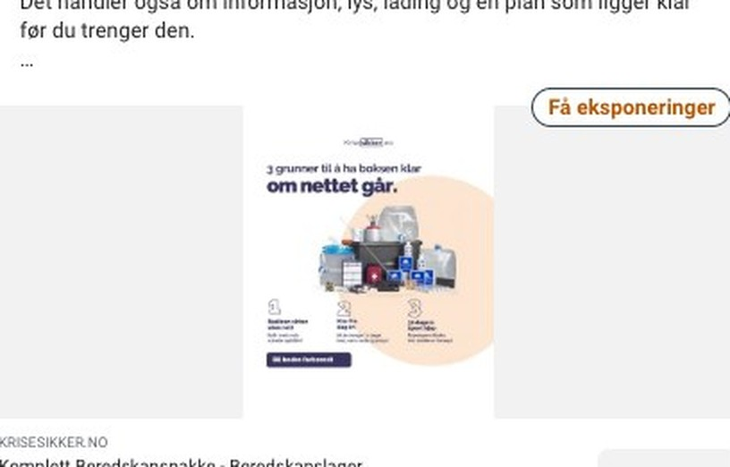
«3 grunner til å ha boksen klar om nettet går»
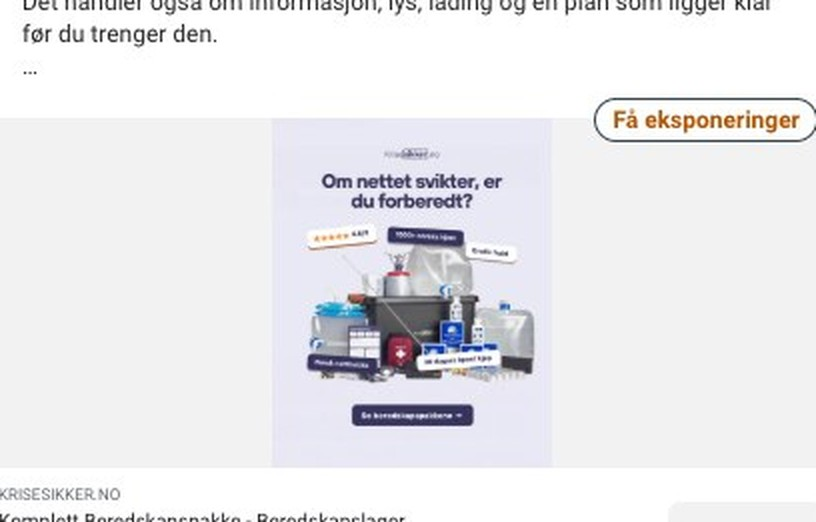
«Om nettet svikter, er du forberedt?»
Grønn ramme betyr at Meta har prioritert annonsen. Grå betyr at den har fått under 100 visninger siden 14. oktober.
Alle 8 bildene bruker samme pakkebilde og samme tekst
- Samme tekst over alle bildene. «Vanskelig å google seg frem når nettet er nede» står over alle åtte, også over bilder som handler om noe annet. Teksten og bildet sier dermed ofte to forskjellige ting.
- Samme pakkebilde går igjen. Seks av åtte bruker det samme utklippet av innholdet. På mobil ser de nesten like ut, så det blir lite variasjon for Meta å teste.
- Mye liten tekst. Flere av bildene har tre til fire linjer liten tekst og knapper i selve bildet. På mobil er det vanskelig å lese på et halvt sekund.
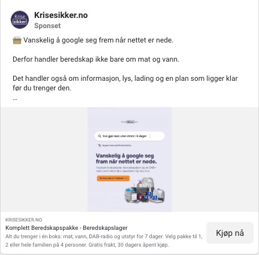
Samme primærtekst ligger på alle 8 bildeannonsene
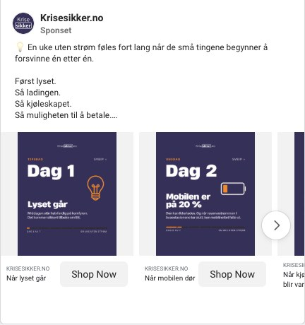
Karusell · aktiv siden 14. okt.
«En uke uten strøm» bør bygges videre på
Karusellen går gjennom en uke dag for dag: lyset går, mobilen er på 20 %, kjøleskapet blir varmt, butikken tar ikke kort, kranen går tom, og til slutt «Dere klarte uka». Den er konkret og rolig, og den slutter med mestring. Det passer godt med «uten skremselspropaganda».
Konseptet kan bli en kort video i 9:16, en serie bildeannonser (én dag per annonse) og en søkeannonse-vinkel.
UGC-videoene er et godt steg, men de er for lange
De to videoene fra 29. oktober viser en ekte person med boksen og en unboxing. Det er den typen innhold som pleier å fungere best for et produkt som dette. Men de er på 38 og 41 sekunder, og det er lenge på Instagram og Facebook.
- Kutt til 15–20 sekunder, med boksen og «alt dette er i én boks» i løpet av de første 2 sekundene.
- Lag flere kroker til samme opptak (3–5 ulike åpninger) og test dem mot hverandre.
- Teksten under videoen er lang. Kort den ned og legg pris og gratis frakt tidlig.
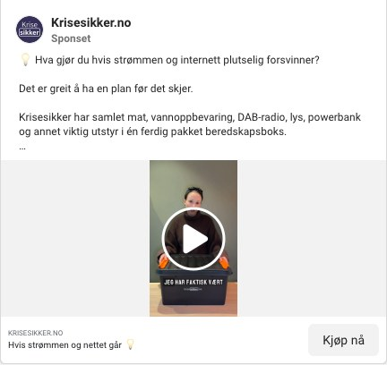
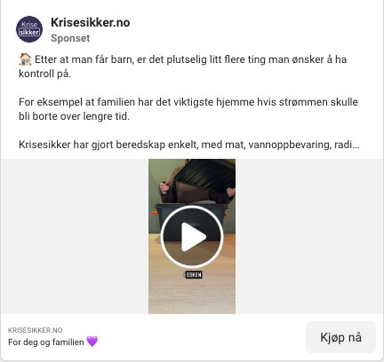
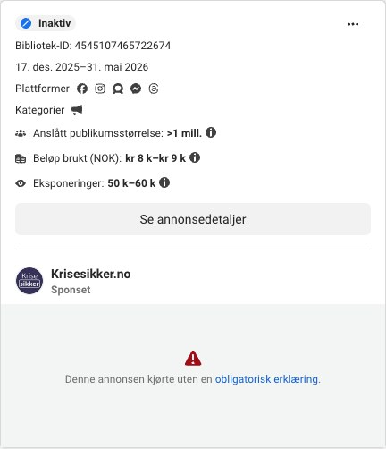
17. des. 2025–31. mai 2026 · 8–9k kr · 50–60k visninger
Meta har merket to tidligere annonser som samfunnstema
Begge de gamle annonsene står som «kjørte uten en obligatorisk erklæring». Det betyr at Meta i ettertid klassifiserte dem som annonser om et samfunnstema, som krever egen godkjenning og en «betalt av»-merking. Den største gikk i fem måneder.
Ord som krise, krig og samfunnssikkerhet kan utløse dette. Tekstene bør handle om hjemmet og hverdagen, ikke om samfunnet. Det bør også avklares om kontoen skal godkjennes for slike annonser, så ikke vinnerne plutselig stoppes.
Nødradio er et åpent felt for Krisesikker
Aktive annonser i Norge som nevner søkeordet, 2. november 2026. Krisesikker er blant de største på «beredskapspakke» og «beredskapslager» på Meta, men er helt fraværende på nødradio. Der kjører konkurrentene for fullt.
Søket «nødradio» gir rundt 310 annonser totalt. Tallene over gjelder de første sidene med treff. På «beredskapspakke» er det Perfekteg (9 annonser) og Krisesikker (8) som dominerer.
Fem grep, i denne rekkefølgen
Ingenting her er bygget på tall fra kontoene ennå. Når vi får tilgang, justerer vi rekkefølgen etter hva som faktisk selger.
Ny søketekst på Google
Bytt ut «Norges Beste» og test fakta mot hverandre i RSA: 4,8/5 fra 187 anmeldelser, 1 500+ norske hjem, DSBs liste for 7 dager, Stormberg og Primus, gratis frakt og 30 dagers åpent kjøp. Legg inn produktpris og anmeldelser som annonseutvidelser.
Egen satsing på nødradioen
- Google: egen søkekampanje på nødradio, DAB-radio med sveiv og liknende.
- Meta: egne annonser for nødradioen (799,-), med vinkelen «1 hjemme + 1 på hytta».
- Konkurrentene er store på radio, så annonsene må vinne på pris, frakt, 30 dagers åpent kjøp og norsk kundeservice.
Rydd i Shopping
Sjekk ROAS per produkt, del opp etter margin og gi beredskapspakken eget budsjett, så solcellepanelet ikke tar visningene. Fjern blogg-sider fra dynamiske annonser.
Ny runde på Meta med vinnerne som utgangspunkt
- La de fire vinnerne gå, og stopp ingenting før vi har sett tallene.
- Test ny primærtekst som passer til hvert bilde, i stedet for én felles tekst.
- Lag nye bilder med ekte foto av boksen hjemme hos folk i stedet for samme utklipp.
- Klipp UGC-videoene ned til 15–20 sekunder og lag flere kroker.
- Lag «En uke uten strøm» som video, og en julegave-vinkel for november og desember.
Sikre mot nye stopp på Meta
Gå gjennom ordbruken så annonsene ikke leses som samfunnstema, og avklar om kontoen skal ha godkjenning for slike annonser.
Neste steg
For å gå fra det vi ser utenfra til tall vi kan styre etter, trenger vi:
- Lesetilgang til Google Ads og Meta Business
- Margin og snittordre per pakke (1, 2 og 3–4 personer) og for nødradioen
- Tilgang til GA4 eller Shopify-rapportene, så vi ser hvilke kanaler som faktisk selger
Da kan vi regne ut hvilken ROAS hver kampanje må ha for å være lønnsom, og vise hvor budsjettet gir mest.
Book en prat